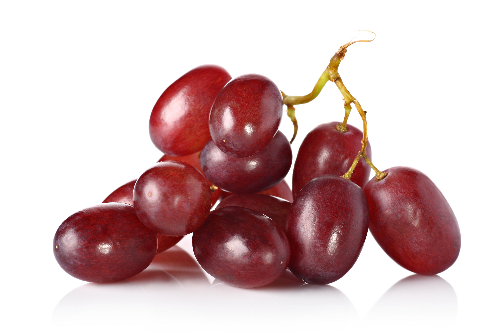

Understanding Red Wine Varietals
Although wines tend to be generically categorized as
either "white" or "red," in reality, there is a
collection of wine varietals each with its own
distinguishing characteristics. The red category
includes a robust collection of over 20 varietals,
including:
- Barbera
- Brunello
- Cabernet Franc
- Cabernet Sauvignon
- Carignan
- Carmenere
- Charbono
- Dolcetto
- Gamay
- Grenache
- Malbrec
- Merlot
HTML 4 for Dummies, 4th Edition
by Ed Tittel and Natanya Pitts ISBN:0764519956
John Wiley & Sons © 2003 (408 pages)
Whether your goal is to build a simple, text-oriented Web site
or one loaded with frames, graphics, and animation, this step�by-step book will put you on the right track.
Table of Contents
HTML 4 For Dummies, 4th Edition
Introduction